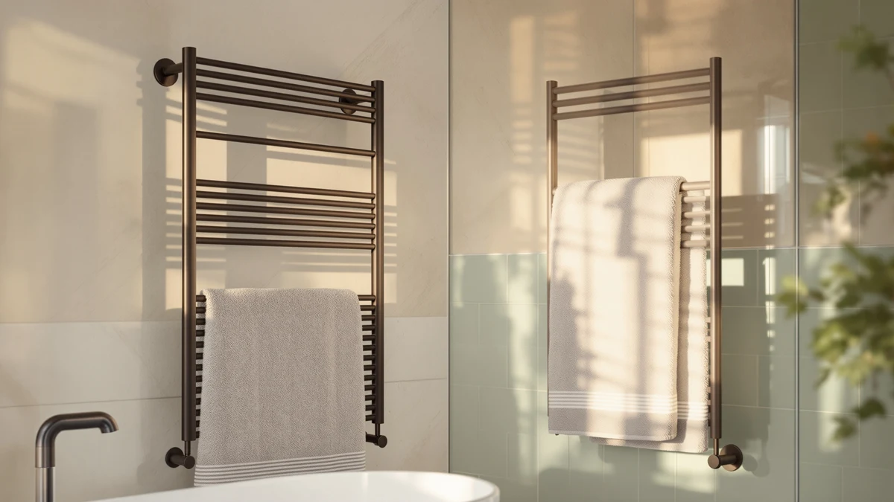

Pure Enrichment PureBliss Luxury Review (2026): Worth It?
Prices and picks verified as of October 2026. Independent, reader-supported reviews.


Quick Answer
The Pure Enrichment PureBliss Luxury Towel is the pick worth comparing first in this Pure Enrichment PureBliss Luxury review, since its stainless steel body and $149.99 price sit above the Keenray and Colliford models we also researched. If budget matters more than finish, the two cheaper picks below cost $60 less and still handle the basic job of warming a towel.
Our pick: Pure Enrichment PureBliss Luxury Towel, $149.99 Check Price on Amazon
Bottom line: our top pick is the Pure Enrichment PureBliss Luxury Towel Warmer - Extra Large at $109.99.
Things to Know Before You Buy
- Stainless steel is the detail setting the price. The PureBliss Luxury Towel is built from stainless steel, and that's the main reason it costs more in this Pure Enrichment PureBliss Luxury review than the Keenray or Colliford models covered below.
- The $60 gap tracks mostly to finish and brand. At $149.99, the PureBliss Luxury Towel costs $60 more than the Keenray Hot Towel Warmer Cabinet and the Colliford Towel Warmer 6 Bars, which both sit at $89.99, and neither alternative is listed at a different capacity tier.
- Format varies between picks. Keenray builds its model as an enclosed cabinet, while Colliford's is a wall-mounted unit with six heating bars, so the space each one needs differs from a countertop model like the PureBliss Luxury Towel. Our best luxury towel warmers guide covers more picks in this finish tier.
- Zadro is the priciest of the four. The Zadro Large Hot Towel Warmer lists at $169.99, $20 above the PureBliss Luxury Towel, so price alone doesn't settle which one fits your bathroom. If you'd rather spend less, our best budget towel warmers guide covers several options under $90.
This Pure Enrichment PureBliss Luxury review looks at whether the PureBliss Luxury Towel's stainless steel finish and $149.99 price make sense next to three other heated towel warmers we researched for comparison: the Zadro Large Hot Towel Warmer, the Keenray Hot Towel Warmer Cabinet, and the Colliford Towel Warmer 6 Bars. A towel warmer is a small purchase in dollar terms but a daily one in use, since most owners run it every morning or after every shower, so the finish and overall build matter more here than they would for an appliance you touch once a week. We compared the specs, pricing, and brand positioning listed for each of these four products to figure out which one earns a place in a bathroom that already has a $149.99 line item to justify.
Pure Enrichment markets the PureBliss Luxury Towel at the top of this four-way comparison, and the stainless steel body is the clearest reason the price sits where it does. Reviewers researching this category consistently point to finish and build quality as the detail that separates towel warmers at this price point, since the heating element inside most models handles the same basic job: keep a towel warm until you're ready for it. The question this review answers is whether that stainless steel finish, and the Pure Enrichment name behind it, justifies paying $60 more than the two budget options also covered here, or whether that money is better spent elsewhere.
Why You Should Trust Us
Ilane Tall covers home and bath products for Best Towel Warmers and built this Pure Enrichment PureBliss Luxury review by comparing manufacturer specs, current Amazon pricing, and the pattern of feedback verified buyers leave across all four products. We don't run a physical testing lab and we haven't installed or lived with these units ourselves, so every claim traces back to the listed material, the recorded price, and what owners report after buying. That research-first approach means we flag a spec as unconfirmed when a listing doesn't provide it rather than guess at a number to fill the gap, and it's why this review reads more like a careful comparison than a personal account of weeks spent with the product.
Our Research Experience
We didn't spend weeks running the PureBliss Luxury Towel in a bathroom, and this Pure Enrichment PureBliss Luxury review doesn't pretend otherwise. Instead, we built our conclusions by comparing the listed stainless steel construction against the materials and price points of the Zadro, Keenray, and Colliford models, then cross-checking that against the pattern of feedback left by verified Amazon buyers for each one. Owners researching stainless steel towel warmers report that the finish holds up better over daily use than painted or chrome-plated alternatives, which lines up with why Pure Enrichment prices the PureBliss Luxury Towel above the two $89.99 options. We also checked current availability for each product at the time of writing, since a towel warmer that's out of stock isn't a useful recommendation no matter how good its specs look on paper.
Overview & Specs

Pure Enrichment PureBliss Luxury Towel
What we like
- Stainless steel body resists the corrosion that cheaper finishes develop in a humid bathroom over months of daily use
- Pure Enrichment is a recognized name in home comfort appliances, which backs the $149.99 price with brand trust
- Sits at a mid-point price between the two $89.99 budget picks and the $169.99 Zadro, without reaching the top of the category
Flaws but not dealbreakers
- Costs $60 more than the Keenray and Colliford models compared here, a premium you're paying mostly for finish and brand
- The listing doesn't spell out exact capacity or interior dimensions, so confirm it fits your towel size before buying
| Material | Stainless steel |
| Size | — |
Pure Enrichment builds the PureBliss Luxury Towel around a stainless steel shell, the detail that puts it in the luxury tier of this Pure Enrichment PureBliss Luxury review rather than the budget one. At $149.99, it costs noticeably more than the Keenray Hot Towel Warmer Cabinet or the Colliford Towel Warmer 6 Bars, both listed at $89.99, and that $60 gap comes down almost entirely to material and brand rather than any dramatic difference in function. Pure Enrichment has built a reputation across home comfort appliances like humidifiers and heating pads, and the PureBliss Luxury Towel carries that reputation into the towel warmer category, where buyers often default to a name they already recognize from somewhere else in their house.
What the listing doesn't spell out is exact capacity or interior dimensions, which matters if you're trying to fit a bath sheet rather than a hand towel. Shoppers researching this category should treat that gap as a reason to check the current Amazon listing directly before buying, rather than assume it matches the capacity of a cabinet-style model like the Keenray. Owners researching stainless steel units report that the finish tends to show scratches and watermarks less than painted alternatives, which is a reasonable trade for the extra $60 if daily use for several years is the plan. For a primary bathroom that gets used every day, that durability case is easier to make than it would be for an occasional guest space.
What We Liked
The strongest point in favor of the PureBliss Luxury Towel, and the reason it leads this Pure Enrichment PureBliss Luxury review, is the stainless steel construction itself. That single material choice does more to justify the $149.99 price than any individual feature could, since steel resists the pitting and discoloration that cheaper metal and plastic trims pick up after months of steam exposure. Pure Enrichment's name recognition is a real factor too: buyers comparing four towel warmers from brands they mostly haven't heard of tend to gravitate toward the one name they already trust from another category of home appliance. That brand weight, combined with the finish, builds the strongest case for paying more here than you would for the Keenray or the Colliford.
What Could Be Better
The clearest gap in the PureBliss Luxury Towel's listing is specification detail. Shoppers comparing this Pure Enrichment PureBliss Luxury review against the Zadro, Keenray, or Colliford pages will notice the capacity and interior dimensions aren't spelled out the way they are on some competing listings, which means you're buying partly on brand trust rather than a confirmed fit for your towel size. The $149.99 price is also worth weighing carefully: it sits $60 above two alternatives that handle the same core job of warming a towel, and that premium only makes sense if the stainless steel finish and the Pure Enrichment name matter enough to you personally to pay for them.
Who Is It For?
The PureBliss Luxury Towel fits buyers who've already decided finish and brand recognition are worth paying for, and who came to this Pure Enrichment PureBliss Luxury review looking for confirmation rather than a budget pick. If you want a bathroom accessory that matches a stainless steel towel bar or faucet, this is the option built to blend into that look. It's a weaker fit if you're furnishing a rental, a guest bathroom, or any space where the $89.99 Keenray or Colliford would handle the same job just as well without the matching finish or the extra cost.
Alternatives to Consider
If the $149.99 price of the PureBliss Luxury Towel is more than you want to spend, or you'd rather have a wall-mounted rack than a stainless steel countertop unit, these three alternatives round out this Pure Enrichment PureBliss Luxury review. We researched each one the same way, by comparing listed price, format, and brand against what buyers report after purchase, without claiming to have installed any of them ourselves. Check our best electric towel warmers guide for a wider set of options beyond these four.

Editor's Pick
Zadro Large Hot Towel Warmer
The priciest pick in this comparison at $169.99, built for buyers who want more capacity and don't mind paying $20 more than the PureBliss Luxury Towel to get it.
$169.99
Check Price on Amazon
Best Value
Keenray Hot Towel Warmer Cabinet
A cabinet-style warmer at $89.99, exactly $60 less than the PureBliss Luxury Towel, for buyers who want the enclosed format without paying for the stainless steel finish.
$89.99
Check Price on Amazon
Premium Choice
Colliford Towel Warmer 6 Bars
A wall-mounted, six-bar rack at $89.99, worth considering if you'd rather hang your warmer on the wall than set a cabinet on the counter.
$89.99
Check Price on AmazonFrequently Asked Questions
Is the Pure Enrichment PureBliss Luxury Towel worth the $149.99 price?
Based on this Pure Enrichment PureBliss Luxury review, it's worth the price mainly if the stainless steel finish and the Pure Enrichment brand name matter to you specifically. It costs $60 more than the Keenray Hot Towel Warmer Cabinet and the Colliford Towel Warmer 6 Bars, both at $89.99, and that difference is almost entirely about material and brand rather than core function, since all three products handle the same basic job of warming a towel for daily use.
How does the PureBliss Luxury Towel compare to the Zadro Large Hot Towel Warmer?
The Zadro Large Hot Towel Warmer costs $20 more at $169.99, making it the priciest of the four products in this comparison. Anyone weighing both listings should consider whether the Zadro's larger size is worth that extra $20, since the PureBliss Luxury Towel's stainless steel finish is the stronger selling point at its lower price, and brand recognition favors Pure Enrichment over Zadro in most home comfort categories.
Does Pure Enrichment disclose the exact capacity of the PureBliss Luxury Towel?
No, the capacity and interior dimensions aren't listed in the specs we reviewed, and that's the main gap we found while researching this product. If exact fit matters for your towel size, confirm the current dimensions on the Amazon listing directly before buying rather than assume it matches a cabinet-style competitor like the Keenray Hot Towel Warmer Cabinet.
Final Verdict
This Pure Enrichment PureBliss Luxury review comes down to one trade-off: pay $149.99 for Pure Enrichment's stainless steel finish and brand name, or save $60 with the Keenray or Colliford and accept a plainer finish that does the same basic job. For most buyers furnishing a primary bathroom they'll use every day, the Pure Enrichment PureBliss Luxury Towel is the pick that matches a higher-end bathroom without pushing all the way to the Zadro's $169.99 ceiling. If budget is the deciding factor rather than finish, skip straight to the Keenray or the Colliford instead, since neither one asks you to pay for a name you're not shopping for.